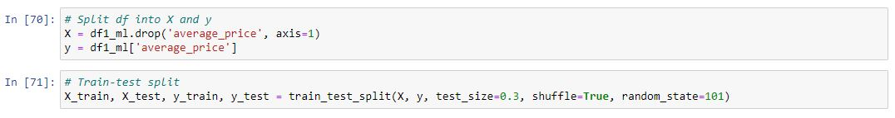
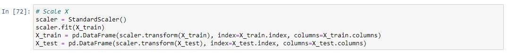
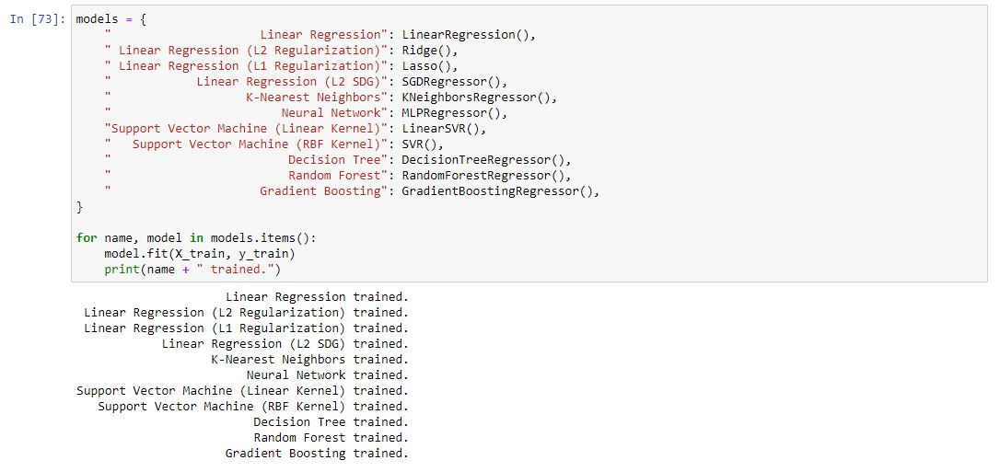
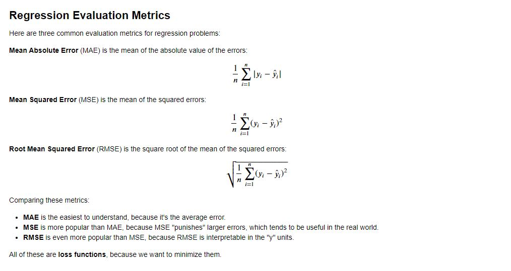
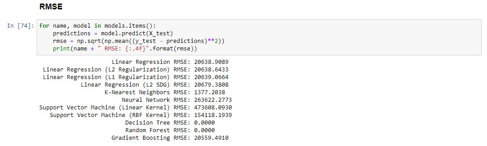
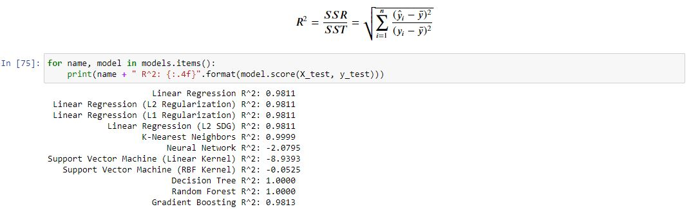

Machine Learning: Annual
Annual Data with many variables
Annual
Now it’s time to split our data into a training set and a testing set! Using sklearn to split data into a training set and a testing set. We do this so that we have something to measure our model against (test set). The data is split 70% training set and 30% testing set. The random state being set to 101 means that the data will be randomised in the same manner each time we run our model (producing roughly same results each time).
Our machine learning algorithm just sees numbers — if there is a vast difference in the range say few ranging in thousands and few ranging in the tens, and it makes the underlying assumption that higher ranging numbers have superiority of some sort. This is why we must scale our X variables.
Now we could start with our sklearn cheatsheet to help us pick an appropriate model.

Using our map we end up at the SDG Regressor. However often what is easiest with a smaller dataset such as this it is often easiest to run allot of models on our dataset to see which produces the best result (which we can measure using the error metrics we will discuss later).
Now that our models our trained we can use error metrics to measure their accuracy RMSE being the most reliable measure of those described below.
As RMSE is the most reliable of the bunch above we shall take this to measure to the reliability of our trained models.
However, it is recommended to use R-Squared or rather adjusted R-Squared for evaluating the model performance of the regression models. This is primarily because R-Squared captures the fraction of response variance captured by the regression and tend to give better picture of quality of regression model.
As we can see from our results the SDGRegressor was outperformed by many models. The best of which was the Random Forest. There have been many papers written about Random Forests and their amazing accuracy.
Random Forest seems to be the best model at an RMSE of £0 and an R squared of 1.
Given houses_sold, age, no_males, no_females, Recycling_Rates, total_hourly_pay, male_hourly_pay, female_hourly_pay we can predict the average future house price within £0.